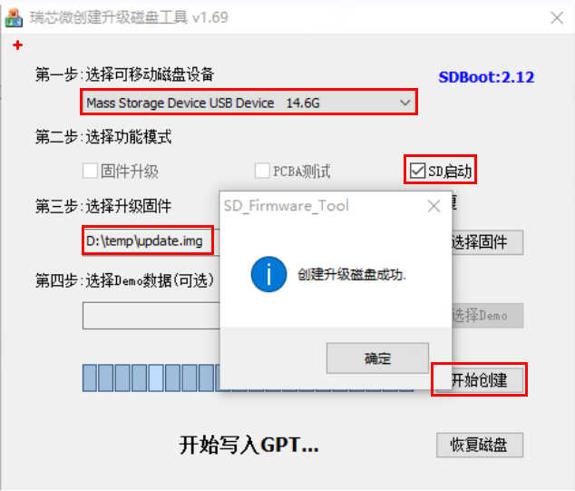

<!DOCTYPE lake>
<ol list="u7b3f783a"><li data-lake-id="u0a22ff33" fid="ud820eb35" id="u0a22ff33"><span class="lake-fontsize-12" data-lake-id="u8f3f44e9" id="u8f3f44e9" style="color: rgb(51, 51, 51)">解压SDDiskTool_v1.7.zip</span></li><li data-lake-id="u8feef2fa" fid="ud820eb35" id="u8feef2fa"><span class="lake-fontsize-12" data-lake-id="ue66e73bc" id="ue66e73bc" style="color: rgb(51, 51, 51)">以管理员运行SD_Firmware_Tool.exe可执行文件</span></li><li data-lake-id="ub3d9e8c2" fid="ud820eb35" id="ub3d9e8c2"><span class="lake-fontsize-12" data-lake-id="u3b8b0eb9" id="u3b8b0eb9" style="color: rgb(51, 51, 51)">烧录步骤：</span></li></ol><ol data-lake-indent="1" list="u7b3f783a"><li data-lake-id="uef2ebf8b" fid="u25ca5c3d" id="uef2ebf8b"><span class="lake-fontsize-12" data-lake-id="ue262bdcf" id="ue262bdcf" style="color: rgb(51, 51, 51)">选择可移动磁盘设备—— SD卡</span></li><li data-lake-id="uc2c0ef89" fid="u25ca5c3d" id="uc2c0ef89"><span class="lake-fontsize-12" data-lake-id="u43c1144c" id="u43c1144c" style="color: rgb(51, 51, 51)">选择功能模式——SD启动</span></li><li data-lake-id="u01e8a7e5" fid="u25ca5c3d" id="u01e8a7e5"><span class="lake-fontsize-12" data-lake-id="u06b9f8b3" id="u06b9f8b3" style="color: rgb(51, 51, 51)">选择升级固件——update.img</span></li><li data-lake-id="u971613d3" fid="u25ca5c3d" id="u971613d3"><span class="lake-fontsize-12" data-lake-id="u65f83181" id="u65f83181" style="color: rgb(51, 51, 51)">点击开始创建，等待提示创建成功即可</span><span data-lake-id="u49433ef0" id="u49433ef0"><br/></span><span data-lake-id="ua6529d66" id="ua6529d66"> </span></li></ol><p data-lake-id="u24aea58d" id="u24aea58d"></p>